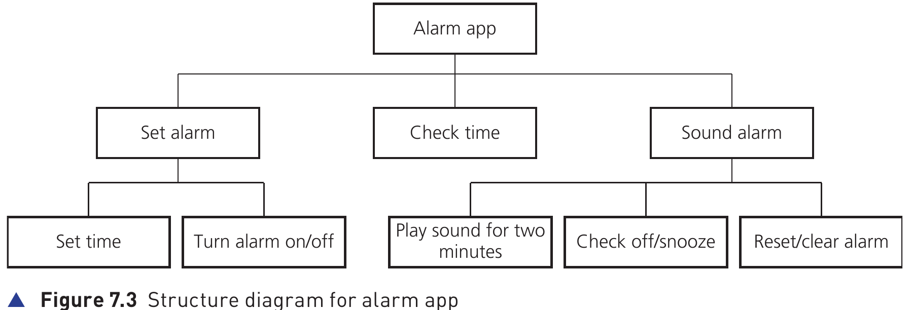
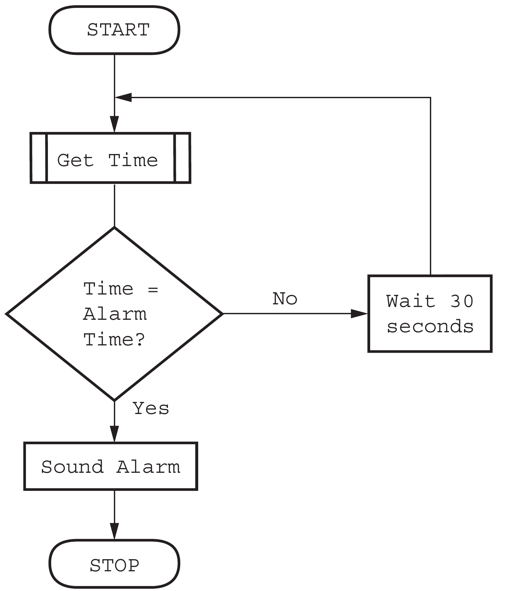
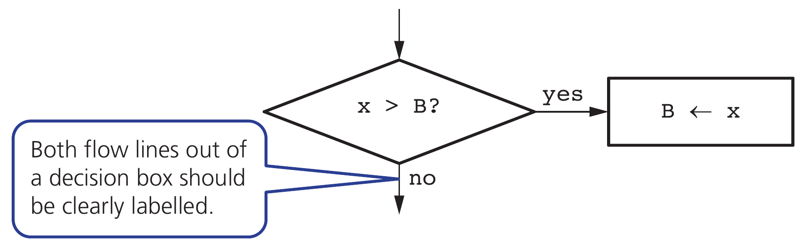

← → Flip slides · F Full screen · Esc Exit full screen
7.1 · Analysis · 01
The quiz-score problem
A school records five quiz scores, each from 0 to 20.
Input: five valid scores. Process: total, mean and highest.
Output: the mean and highest score. Store results if they must survive closing the program.
Check your understanding
Which details could you abstract away?
Show model answer
The colour of the classroom walls is irrelevant; the number of scores and valid range are essential.
Teacher notes / 教师提示
Starter: ask pairs to write the input, process, output and storage requirements before showing the model.
7.1 · Requirements · 02
Inputs, processes, outputs and storage
Five scores must lie between 0 and 20.
Saving the result is a separate requirement from displaying it.
Part
Quiz-score system
Input
Five integer scores
Process
Validate, total, divide, find highest
Output
Mean and highest score
Storage
Saved summary for the next session
Check your understanding
Which part checks that 24 is unacceptable?
Show model answer
The input-validation process rejects 24.
Teacher notes / 教师提示
Ask students to predict first, explain their reasoning, then compare with the model answer. Use the linked chapter workbook for independent practice.
7.1 · Life cycle · 03
The development life cycle
Analysis defines requirements using abstraction and decomposition.
Design uses structure diagrams, flowcharts and pseudocode.
Coding implements and tests components; testing checks the completed solution against requirements.
Check your understanding
A correct-looking program fails when the input is 20. Which stage needs revisiting?
Show model answer
Testing reveals the failure. Revisit the design or implementation, correct it and retest the requirement.
Teacher notes / 教师提示
Ask students to predict first, explain their reasoning, then compare with the model answer. Use the linked chapter workbook for independent practice.
7.2 · Design · 04
Decomposition and design methods
Main task: process a set of quiz scores.
Sub-tasks: read a valid score; calculate statistics; display results.
A structure diagram shows the hierarchy. A flowchart shows execution order and decisions.
Representation
What it communicates
Structure diagram
Main task → smaller sub-tasks
Flowchart
Sequence, decisions and repetition
Pseudocode
Precise language-independent steps
Check your understanding
Which sub-task could be reused for each of five scores?
Show model answer
ReadValidScore can be called repeatedly instead of copying validation code.
Teacher notes / 教师提示
Students draw a hierarchy and a flowchart for input validation. Use the linked official conventions PDF for terminal, process, input/output, decision and flow-line symbols.
7.2 · Structure diagrams · 05
A structure diagram shows the parts
The root names the complete system.
Each lower level breaks a task into smaller tasks.
Branches describe responsibility, not execution order.

Hodder p.262, Figure 7.3
Check your understanding
Which branch handles switching the alarm on?
Show model answer
Set alarm contains Turn alarm on/off.
Teacher notes / 教师提示
Ask students to predict first, explain their reasoning, then compare with the model answer. Use the linked chapter workbook for independent practice.
7.2 · Flowcharts · 06
A flowchart shows the next step
Follow the arrows from START.
A decision selects a labelled branch.
Here, No waits and checks again. Yes sounds the alarm.

Hodder p.262, Figure 7.4
Check your understanding
What happens when the current time does not match?
Show model answer
Wait 30 seconds, get the time again, then repeat the comparison.
Teacher notes / 教师提示
Ask students to predict first, explain their reasoning, then compare with the model answer. Use the linked chapter workbook for independent practice.
7.2 · Flowchart tracing · 07
Decision symbols and assignments
The diamond contains a condition.
Yes and No must lead to the correct next instruction.
The rectangle changes the stored value.

Hodder p.263, Figure 7.8
Check your understanding
Trace the diagram for X = 9 and B = 6.
Show model answer
The comparison is true. B becomes 9.
Teacher notes / 教师提示
Ask students to predict first, explain their reasoning, then compare with the model answer. Use the linked chapter workbook for independent practice.
7.4 · Standard algorithms · 08
Totalling, counting and averaging
Initialise the accumulator before the loop.
Count records by adding 1; total values by adding the value.
Divide only when the count is greater than zero.
Total ← 0
Count ← 0
FOR Index ← 1 TO 3
INPUT Score
Total ← Total + Score
Count ← Count + 1
NEXT Index
OUTPUT Total / Count
Check your understanding
For inputs 4, 7, 2, what is the final mean?
Show model answer
Total = 13, Count = 3, Mean = 13 / 3. A count is not the total.
Teacher notes / 教师提示
Ask students to trace before revealing results.
7.7 · Trace tables · 09
A complete accumulator trace
Follow the algorithm exactly, including errors.
Record variable changes, prompts and output in execution order.
Do not silently repair code while tracing it.
Step
Score
Total
Count
Output
Initialise
—
0
0
—
Iteration 1
4
4
1
—
Iteration 2
7
11
2
—
Iteration 3
2
13
3
—
After loop
—
13
3
13 / 3
Check your understanding
What would change if Total were reset inside the loop?
Show model answer
The final total would be 2 because earlier inputs would be discarded.
Teacher notes / 教师提示
Ask students to predict first, explain their reasoning, then compare with the model answer. Use the linked chapter workbook for independent practice.
7.4 · Maximum and minimum · 10
Maximum and minimum
Initialise Highest from the first item in a non-empty array.
Compare each remaining item with the current highest.
For a minimum, change the comparison to <.
Highest ← Scores[1]
FOR Index ← 2 TO 5
IF Scores[Index] > Highest THEN
Highest ← Scores[Index]
ENDIF
NEXT Index
OUTPUT Highest
Check your understanding
Why is Highest ← 0 unsafe for arbitrary data?
Show model answer
If all values are negative, zero is not in the list and is incorrectly reported as the maximum.
Teacher notes / 教师提示
Ask students to predict first, explain their reasoning, then compare with the model answer. Use the linked chapter workbook for independent practice.
7.4 · Maximum trace · 11
Maximum: a worked trace
Start with the first value, even when it is negative.
Replace Highest only when a larger value appears.
Step
Value
Highest after step
Initial value
−8
−8
Compare next
−3
−3
Compare next
−11
−3
Compare next
−5
−3
Check your understanding
What comparison would find the minimum?
Show model answer
Use Value < Lowest, with Lowest initially equal to the first value.
Teacher notes / 教师提示
Ask students to predict first, explain their reasoning, then compare with the model answer. Use the linked chapter workbook for independent practice.
7.4 · Linear search · 12
Linear search pseudocode
Compare the target with one element at a time.
Stop when a match is found or the list is exhausted.
This version records the first matching position, or 0 for not found.
Position ← 0
Index ← 1
WHILE Index <= 5 AND Position = 0 DO
IF Scores[Index] = Target THEN
Position ← Index
ENDIF
Index ← Index + 1
ENDWHILE
Check your understanding
For [4, 7, 2, 7, 9], searching for 7 returns what?
Show model answer
Position 2, because the loop stops at the first match.
Teacher notes / 教师提示
Ask students to predict first, explain their reasoning, then compare with the model answer. Use the linked chapter workbook for independent practice.
7.4 · Search trace · 13
Linear search: found and not found
Data: [4, 7, 2, 7, 9]. Indexing starts at 1.
The first matching index is the result.
If every comparison fails, Position remains 0.
Target
Indexes checked
Result
7
1, 2
Position = 2
9
1, 2, 3, 4, 5
Position = 5
6
1, 2, 3, 4, 5
Position = 0
Check your understanding
How many comparisons locate 9?
Show model answer
Five. A missing target also needs five comparisons in this list.
Teacher notes / 教师提示
Ask students to predict first, explain their reasoning, then compare with the model answer. Use the linked chapter workbook for independent practice.
7.4 · Swap trace · 14
Swapping preserves both values
A temporary variable stores the value about to be overwritten.
Each assignment uses the values from the preceding row.
Instruction
A
B
Temp
Initial values
7
2
—
Temp ← A
7
2
7
A ← B
2
2
7
B ← Temp
2
7
7
Check your understanding
What goes wrong without Temp?
Show model answer
After A becomes 2, copying A into B also gives 2. The original 7 is lost.
Teacher notes / 教师提示
Ask students to predict first, explain their reasoning, then compare with the model answer. Use the linked chapter workbook for independent practice.
7.4 · Bubble sort pass 1 · 15
Bubble sort: the first pass
Compare adjacent values from left to right.
Swap only when the left value exceeds the right value.
Comparison
List after comparison
Action
Start
4 7 2 1
—
4 and 7
4 7 2 1
Keep
7 and 2
4 2 7 1
Swap
7 and 1
4 2 1 7
Swap
Check your understanding
Is the list fully sorted at the end of this pass?
Show model answer
No. The largest value is in place, but 4, 2 and 1 still need sorting.
Teacher notes / 教师提示
Ask students to predict first, explain their reasoning, then compare with the model answer. Use the linked chapter workbook for independent practice.
7.4 · Bubble sort termination · 16
Bubble sort: later passes
Each pass moves another large value towards the right.
The simple version stops after a complete pass makes no swaps.
Pass
List at end
Any swaps?
1
4 2 1 7
TRUE
2
2 1 4 7
TRUE
3
1 2 4 7
TRUE
4
1 2 4 7
FALSE
Check your understanding
Why does this version execute pass 4?
Show model answer
It confirms that there are no swaps. The loop stops using Swapped, not by looking at the list.
Teacher notes / 教师提示
Ask students to predict first, explain their reasoning, then compare with the model answer. Use the linked chapter workbook for independent practice.
7.4 · Bubble sort · 17
Bubble sort pseudocode
Compare neighbours and swap if they are in the wrong order.
After one ascending pass, the largest value is at the right end.
Repeat until a full pass makes no swaps.
REPEAT
Swapped ← FALSE
FOR Index ← 1 TO N - 1
IF A[Index] > A[Index + 1] THEN
Temp ← A[Index]
A[Index] ← A[Index + 1]
A[Index + 1] ← Temp
Swapped ← TRUE
ENDIF
NEXT Index
UNTIL Swapped = FALSE
Check your understanding
One pass over [4, 7, 2, 1] produces which list?
Show model answer
[4, 2, 1, 7]. One pass does not necessarily sort the entire list.
Teacher notes / 教师提示
Ask students to predict first, explain their reasoning, then compare with the model answer. Use the linked chapter workbook for independent practice.
7.5 · Validation · 18
Validation checks
A value can pass validation and still be factually wrong.
Combine checks where necessary: presence, type and range serve different purposes.
Check
Example
Range / type
Integer score from 0 to 20
Length / format
Code has 6 characters / pattern AB1234
Presence
Name is not empty
Check digit
Recalculate an appended digit to detect some entry errors
Check your understanding
A student types 12 instead of 13; both are valid ages. Will a range check detect it?
Show model answer
No. A range check tests acceptability, not whether the value matches the source.
Teacher notes / 教师提示
A check digit cannot guarantee error-free entry; discuss its limits.
7.5 · Validation examples · 19
Choosing a suitable validation check
Choose a rule that matches the requirement.
A value may satisfy one check and fail another.
Requirement
Check
Rejected example
Integer score
Type
12.5
Score from 0 to 20
Range
21
Exactly 6 characters
Length
AB123
Name required
Presence
Empty entry
Two letters, four digits
Format
1234AB
Check your understanding
Which checks suit a required six-character code?
Show model answer
Presence and length. Add a format check if letters and digits must follow a specific pattern.
Teacher notes / 教师提示
Ask students to predict first, explain their reasoning, then compare with the model answer. Use the linked chapter workbook for independent practice.
7.5 · Check digit · 20
Check digits detect some entry errors
A rule calculates an extra digit from the other digits.
The program recalculates it when the identifier is entered.
A match does not guarantee that the identifier is correct.
Stage
Illustrative classroom rule
Data digits
2, 4, 6
Calculate
(2 + 4 + 6) MOD 10 = 2
Stored code
2462
Mistyped code
2463 fails the final-digit check
Check your understanding
Can a check digit prove that the product is the one intended?
Show model answer
No. A different valid identifier may still pass the rule.
Teacher notes / 教师提示
This simple sum rule is an original teaching example. It is not the ISBN or payment-card algorithm.
7.5 · Verification · 21
Verification checks
Visual check: compare entered data with the original source.
Double entry: enter data twice and compare the entries.
Neither method proves the original source is correct.
Check your understanding
Two identical incorrect entries pass double entry. Why?
Show model answer
The entries agree with each other. Agreement does not establish that either matches the intended value.
Teacher notes / 教师提示
Ask students to predict first, explain their reasoning, then compare with the model answer. Use the linked chapter workbook for independent practice.
7.6 · Test data · 22
Normal, abnormal, extreme and boundary data
For an integer score from 0 to 20 inclusive, test both accepted limits and adjacent rejected values.
A test plan needs input, expected result, actual result and a judgement.
Category
Input
Expected
Normal
12
Accept
Abnormal
21 or "hello"
Reject
Extreme
0 and 20
Accept both
Boundary
−1, 0, 20, 21
Reject, accept, accept, reject
Check your understanding
Are extreme and boundary data identical?
Show model answer
Extreme data are the accepted limits. Boundary data also include the neighbouring rejected values.
Teacher notes / 教师提示
Ask students to predict first, explain their reasoning, then compare with the model answer. Use the linked chapter workbook for independent practice.
7.6 · Test plan · 23
A test plan makes expectations explicit
The accepted integer interval is 0 to 20 inclusive.
Choose expected results before running the program.
Input
Purpose
Expected
12
Normal
Accept
−1
Below lower boundary
Reject
0
Lower extreme
Accept
20
Upper extreme
Accept
21
Above upper boundary
Reject
Check your understanding
If 20 is rejected, which part of the condition may be wrong?
Show model answer
A strict < 20 may have replaced <= 20.
Teacher notes / 教师提示
Ask students to predict first, explain their reasoning, then compare with the model answer. Use the linked chapter workbook for independent practice.
7.8–7.9 · Error correction · 24
Correcting a faulty condition
Requirement: reject any integer outside 0 to 20.
The condition below rejects no number.
Correct the Boolean logic and test all four boundary values.
IF Score < 0 AND Score > 20 THEN
OUTPUT "Invalid"
ENDIF
Check your understanding
Replace the faulty condition with a correct condition.
Show model answer
Use Score < 0 OR Score > 20. A number cannot be below 0 AND above 20 simultaneously.
Teacher notes / 教师提示
Exit task: write a complete five-score algorithm with validation, total, highest and mean. Compare against the downloadable teacher solution. Homework: Hodder chapter 7 workbook, then PMT 7 questions.
7.9 · Independent task · 25
Independent task: five valid scores
Read five integer scores, each from 0 to 20.
Reject invalid values without counting them.
Output the total, mean and highest score.
Check your understanding
For inputs 4, 21, 7, 2, 1, 6, what should the outputs be?
Show model answer
Reject 21. The five valid scores total 20, the mean is 4 and the maximum is 7.
Teacher notes / 教师提示
Allow 8–10 minutes. Ask students to annotate their validation loop and accumulator initialisation. Use the next slide to discuss a possible solution.
7.9 · Model answer · 26
Five scores: model algorithm
Zero is a safe initial maximum for scores from 0 to 20.
Only a valid score leaves the inner loop.
Total ← 0
Highest ← 0
FOR Index ← 1 TO 5
REPEAT
INPUT Score
UNTIL Score >= 0 AND Score <= 20
Total ← Total + Score
IF Score > Highest THEN
Highest ← Score
ENDIF
NEXT Index
OUTPUT Total, Total / 5, Highest
Check your understanding
Why does an invalid entry not increase Index?
Show model answer
REPEAT continues inside the current FOR iteration until the value is valid.
Teacher notes / 教师提示
Ask students to predict first, explain their reasoning, then compare with the model answer. Use the linked chapter workbook for independent practice.
Bubble sort · step through comparisons
Predict the next pair, then step forward. Values sort in ascending order.
Sources: supplied CUP and Hodder textbooks; 2026–2028 syllabus Version 6. Explanations and checks are original classroom materials. Answers are teaching models, not official mark schemes.